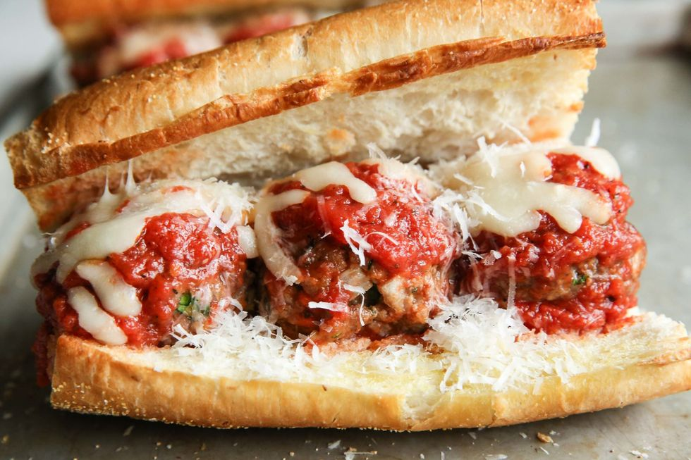

Follow the steps below to make 4 meatball subs, to daze and amaze!
This is a classic sandwich combining meatballs, cheese, baguette, and a bunch of other fresh goodies. A classic and a staple for a reason
Cook: 20 mins
Total: 40 mins
Servings: 4
Yield: 4 meatball subs
Ingredients
1 pound ground beef
¾ cup bread crumbs
1 large egg, beaten
2 cloves garlic, minced
2 tablespoons grated Parmesan cheese
2 tablespoons chopped fresh parsley
2 teaspoons dried Italian seasoning
1 French baguette
1 tablespoon extra-virgin olive oil
½ teaspoon garlic powder
1 pinch salt, or to taste
1 (14 ounce) jar spaghetti sauce
4 slices provolone cheese
How to Make Meatball Subs
This meatball sub starts by making homemade meatballs, then assembling the sandwich. You'll find the full, step-by-step recipe below — but here's a quick overview of what you can expect:
1. Make the Meatballs
Mix the ground beef, bread crumbs, eggs, garlic, Parmesan, and spices with your hands. Shape into evenly sized meatballs and bake until they reach an internal temperature of 160 degrees F.
2. Prep the Bread
Cut the baguette in half (lengthwise) and scoop out some of the bread to make room for the meatballs. Brush olive oil over the bread and sprinkle with seasonings. Bake in the oven until lightly toasted.
3. Make the Sauce
Heat a jar of spaghetti sauce on the stove. Once cooked, transfer the meatballs to the sauce and mix them until coated.
4. Assemble the Sandwich
Spoon meatballs and sauce into the baguette. Top with provolone cheese. Bake the entire sandwich until the cheese is melted.
Back to main page